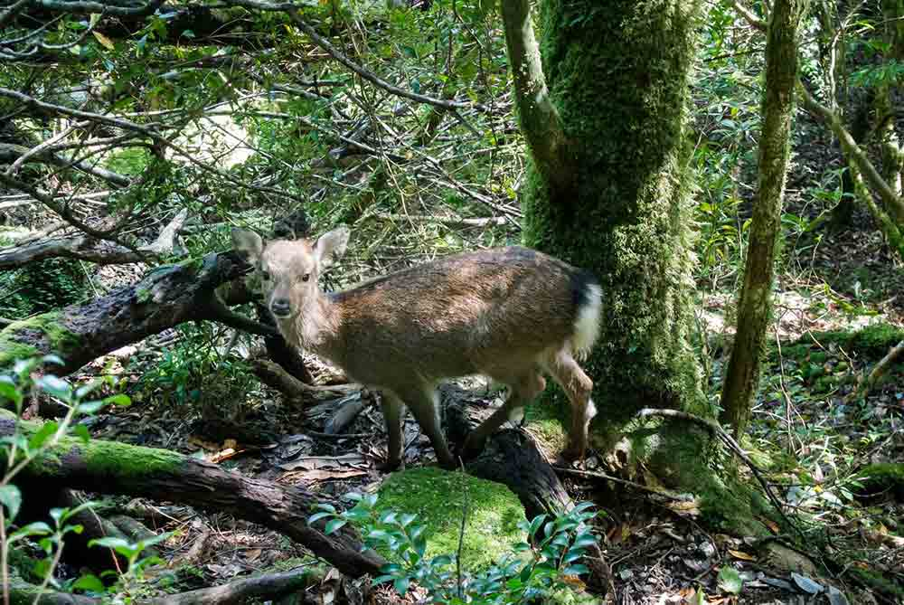
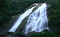
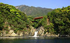
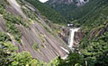
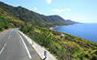
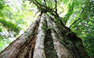
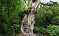
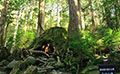
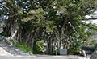

- HOME
- 観光
観 光

日本で初めて世界自然遺産に選ばれた屋久島は縄文杉だけではなく、もののけ姫のモデルになった白谷雲水峡など、学者たちに「人類の至宝」と言われる大自然があります。
屋久島に来たら行っておきたいおすすめ観光スポットをご紹介します♪
|  |
「日本の滝100選」にも選ばれている落差88mの屋久島を代表する滝です。 |
||
|  |
落差5m程度と短いながらも川から海へ直接流れ落ちる全国でも珍しく滝です。 |
||
|  |
幅200m程の巨大な花崗岩の一枚岩から流れ落ちる落差60mの迫力ある滝です。 |
||
|
白い砂浜が1kmも続く屋久島内で最も大きな砂浜です。 |
|||
|  |
屋久島の西部にあり、東シナ海に面した無人地帯に広がる原生林の中を通る林道で、車で走ることが出来る唯一の世界自然遺産地域です。 |
||
|
東シナ海に張り出た永田岬に、明治30年に建てられた高さ19.6mの白亜の灯台です。 |
|||
|  |
推定樹齢3,000年の車で行くことが出来る最も大きな屋久杉です。 |
||
|  |
推定樹齢 2,170年～7,200年。確認されている中で最大の屋久杉。 |
||
|  |
推定樹齢3,000年。屋久島最大の切り株。約400年前に豊臣秀吉に献上する際に伐採されたとされています。 |
||
|  |
中間集落の入口近く、中間川のほとりにある巨大なガジュマルです。トンネル状になっており、車でくぐりぬける事も出来ます。 |